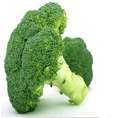

<!--
  This template loads for the 'tab.friend-detail' state (app.js)
  'friend' is a $scope variable created in the FriendsCtrl controller (controllers.js)
  The FriendsCtrl pulls data from the Friends service (service.js)
  The Friends service returns an array of friend data
-->

<ion-view view-title="Subcategory" >
    <ion-content>

 
<section>    
  <ul >

    <div class="my-nav-sub"><li ng-repeat="chat in subcat" >        
 <a class="item item-thumbnail" href="#/tab/products/{{chat.slug}}" ng-style="{'background-image': 'url()'}">    
 
<h2>{{chat.name}}</h2> 
  <p>{{chat.slug}}</p></a> </li></div>

  </ul>
</section>
    </ion-content>

</ion-view>
